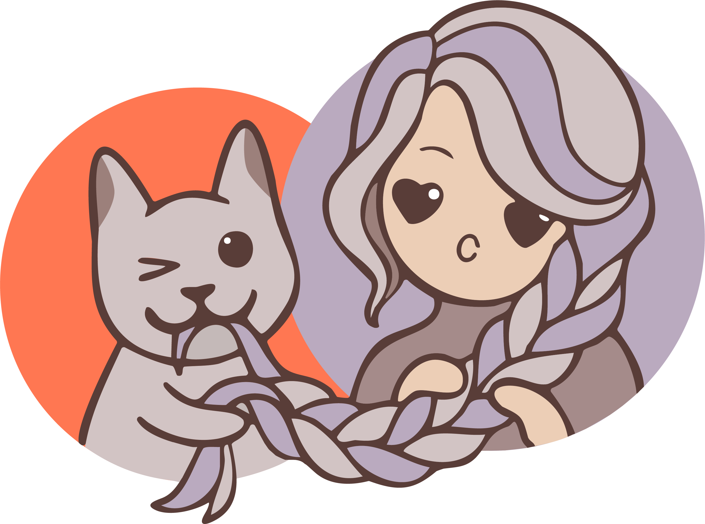

Новый образ
новый опыт
Делаем потрясающие прически с 2014 года. Восемь лет работы и бесчисленное количество заплетенных голов. Уютная студия, работаем в четыре руки. Индивидуальный подход.
Делаем потрясающие прически с 2014 года. Восемь лет работы и бесчисленное количество заплетенных голов. Уютная студия, работаем в четыре руки. Индивидуальный подход.
Мы предлагаем широкий спектр услуг по плетению и уходу за волосами. Каждая работа выполняется с любовью и вниманием к деталям.
Помимо этого, мы изготавливаем великолепные и самые разнообразные комплекты. В наличии более 30 отборных солдат
С ними — идеально. Не тяжело, не жарко, не тянет, не чешется, спать не мешают. При условии, что всё сделано правильно)
Все заботы о причёске исчезают на целых 6 недель!
Моем 1 раз в 7−10 дней специальной пенкой для мытья заплетенных волос или разбавленным шампунем. Подробную инструкцию по уходу расскажем дважды — при консультации и во время плетения.
К сожалению, в комплекте с косами их не будет. Если серьезно, то педикулёз — это контактное заболевание. Насекомые могут только переселиться с зараженной головы, но никак не могут «завестись» самостоятельно. И да, они с намного большим удовольствием живут на волосах, которые часто моют и носят распущенными, чем на косах и дредах из искусственного материала, так как они не могут эффективно размножаться в неестественных условиях.
Если хочется посмотреть и потрогать вживую разные фактуры, можно прийти к нам в студию на личную консультацию. Всё покажем и расскажем, поможем сориентироваться в этом бесконечном многообразии.
Для записи достаточно написать нам любым удобным для Вас способом.
Для получения быстрой консультации присылайте:
Исходя из этого мы сможем максимально быстро и точно сориентировать Вас по цене и срокам изготовления комплекта.
Бронь даты и материала осуществляется по предоплате.
Плетение занимает в среднем 3 часа, возьмите с собой всё, что может потребоваться Вам в это время — перекус и что-нибудь занятное, чтобы не скучно было сидеть. Если принимаете лекарства по часам, не забудьте и о них.
Приходить лучше в удобной тянущейся одежде)

г. Омск, ул. Красный Путь, 143 к3
По предварительной записи